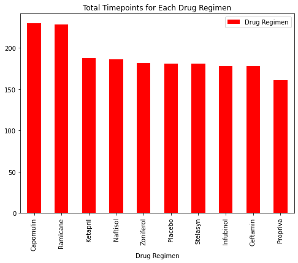
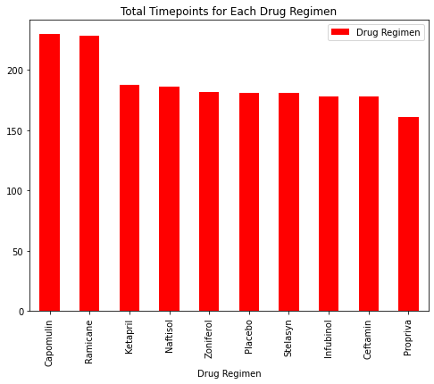

Matplotlib Challenge
As a senior data analyst at the company, I was given access to the complete data from their most recent animal study. In this study, 249 mice who were identified with SCC tumours received treatment with a range of drug regimens. Over the course of 45 days, tumour development was observed and measured. The purpose of this study was to compare the performance of Pymaceuticals’ drug of interest, Capomulin, against the other treatment regimens.
The executive team has tasked me to generating all of the tables and figures needed for the technical report of the clinical study. They have also asked you for a top-level summary of the study results.

 

My Observations
The analysis is done on 248 mouses where 49% are Female and 51% are Male mouses.
According to the Summary Statistics table, Capomulin and Ramicane shows the most promising results as the tumour volume is the lowest and mean and median values are almost same. Moreover, the Variances are also lowest among the other treatments which implies, the tumour volumes are less spread out.
The correlation between mouse weight and the average tumour volume is 0.84, that means the mouse weight and the average tumour volume has a strong positive correlation.